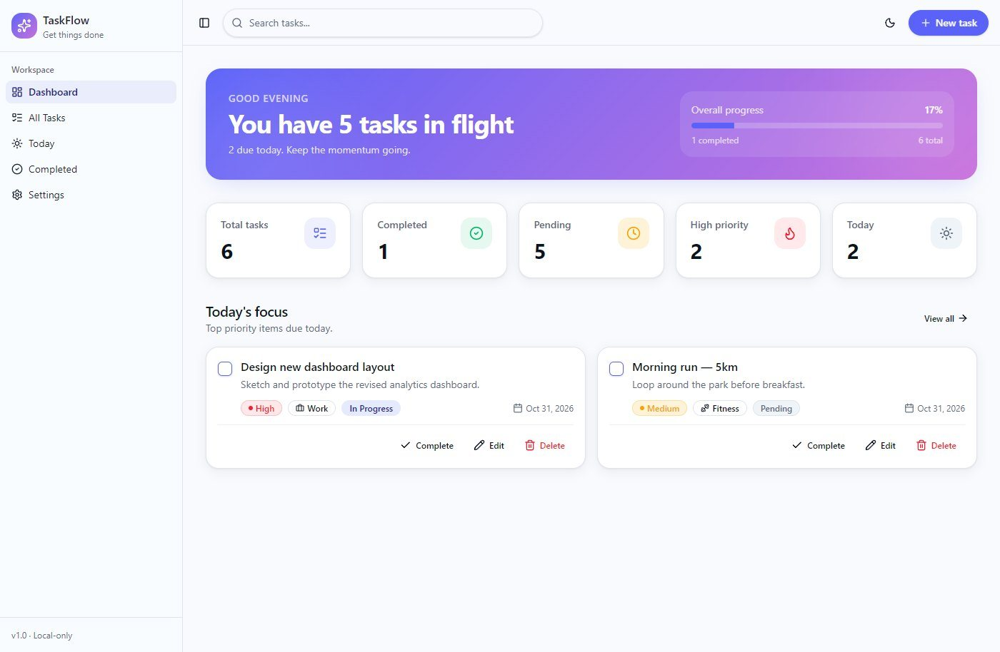
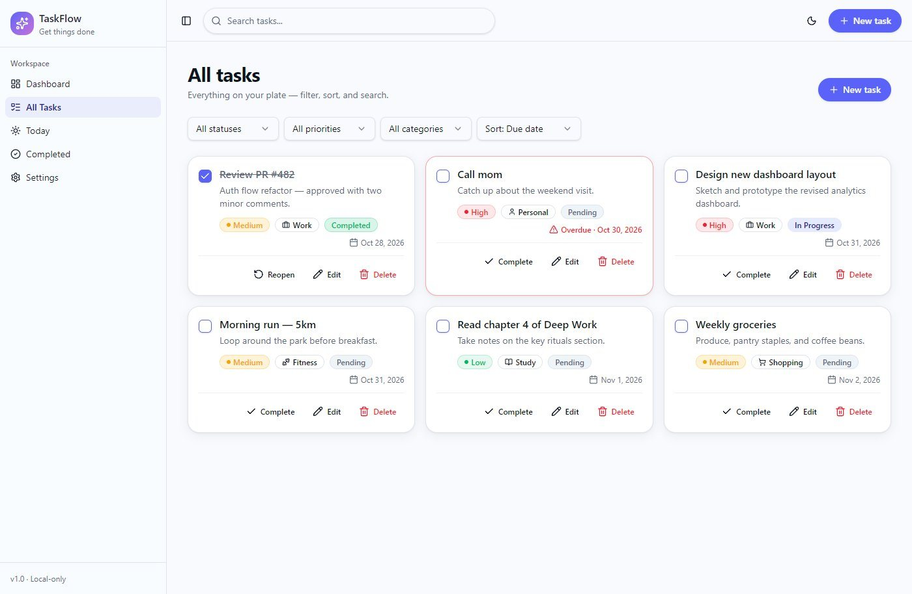
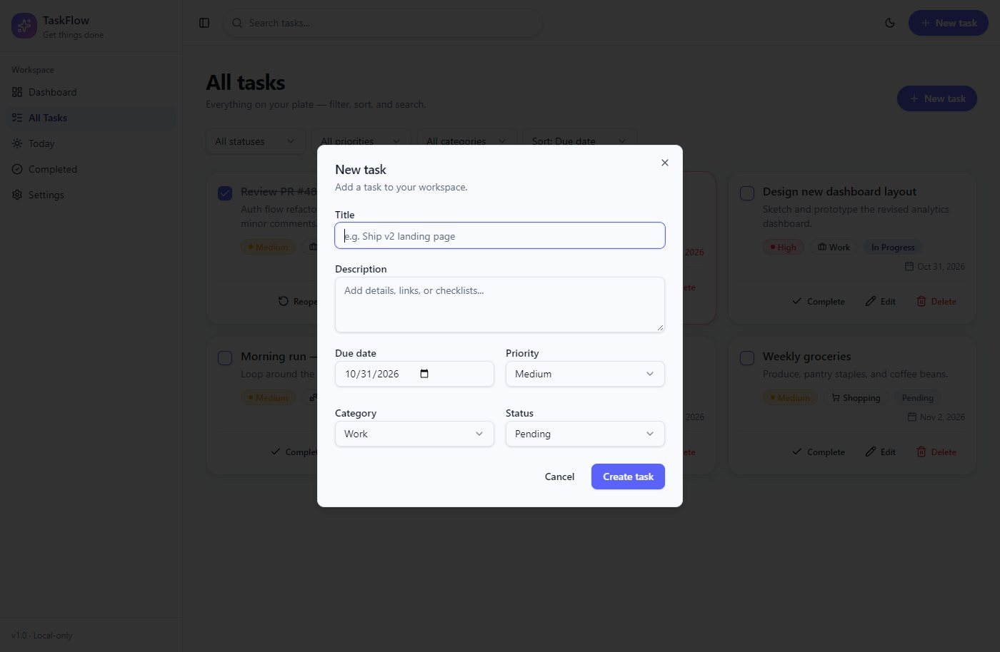
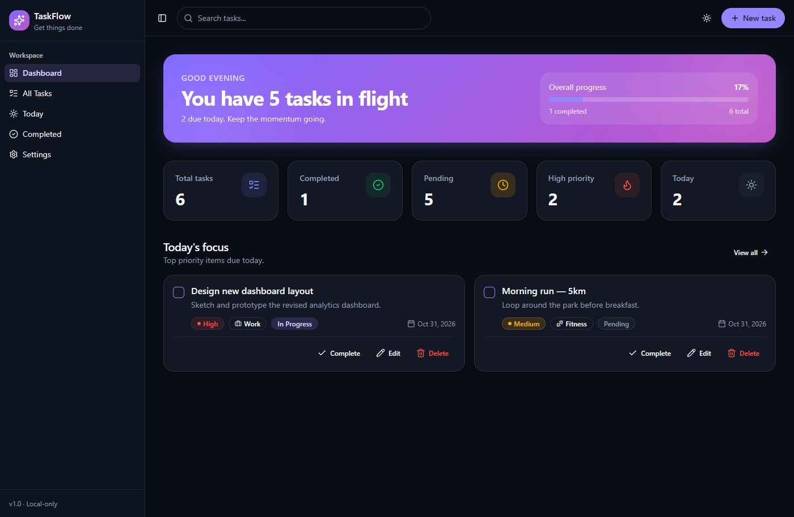

No account to start
Tasks are saved in the browser under a versioned key, so the format can change later without breaking old data. A first visit is seeded with sample tasks dated around today, so the dashboard is never empty.
A task manager for planning the day. Each task has a due date, priority, category and status, and every view, from the dashboard to the completed list, is built from the same list of tasks saved in the browser.

Most to-do apps either ask for an account before you can write a single task, or show a flat list that doesn't tell you what matters today.
TaskFlow opens straight to a dashboard: how much is done, what's due today and what's high priority. There's nothing to sign up for; the tasks live in your browser.
React and TypeScript on TanStack Start, which renders each page on the server and hydrates it in the browser. Components come from shadcn/ui, built on Radix, and are styled with Tailwind CSS v4 and color tokens for both themes. All task state lives in one React context that saves to localStorage.
Tasks are saved in the browser under a versioned key, so the format can change later without breaking old data. A first visit is seeded with sample tasks dated around today, so the dashboard is never empty.
All tasks, Today and Completed are the same page component given a different filter. Filtering, search and sorting run in one memoized step, so every view behaves the same way.
Tasks load after the page hydrates, and the time-of-day greeting is set in the browser, so the HTML from the server always matches the first render in the browser. This fixed a hydration error that only appeared when the visitor's clock was in a different part of the day than the server's.
Due dates are stored as plain yyyy-mm-dd strings and compared in local time, so a task due today stays due today wherever you are.
Dialogs, selects and menus are Radix components, so focus handling, keyboard navigation and screen-reader labels work without extra code. Every action confirms with a short toast.



Screens show the sample tasks a first visit starts with.
Animations are off because your device is set to reduce motion.